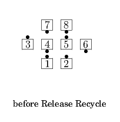
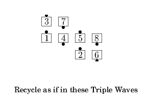
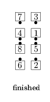

From a Generalized 1/4 Tag or Generalized 1/4 Diamond: the Ends of the Center 4 Press Ahead as the unapproached Outside dancers Press Out; Outsides work with Phantoms (if necessary) and all do the <anything> call.
  
Note: Phantoms are removed at the end of the call to eliminate empty planes between the Outsides and the Centers, unless the <anything> call involves a concept which specifically includes phantoms. For example, Release Triple Wave Ah So retains the Phantoms whereas Release Ah So doesn't).
© Copyright 2004-2017 Vic Ceder and CALLERLAB Inc., The International Association of Square Dance Callers. Permission to reprint, republish, and create derivative works without royalty is hereby granted, provided this notice appears. Publication on the Internet of derivative works without royalty is hereby granted provided this notice appears. Permission to quote parts or all of this document without royalty is hereby granted, provided this notice is included. Information contained herein shall not be changed nor revised in any derivation or publication.